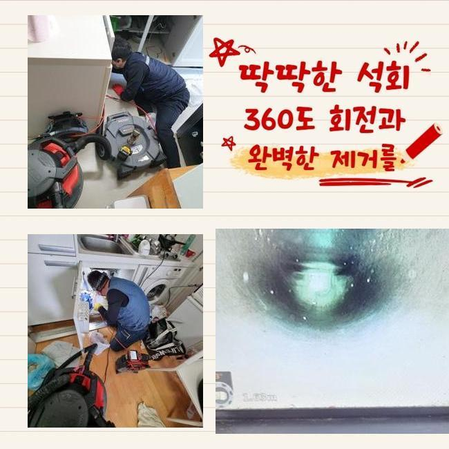
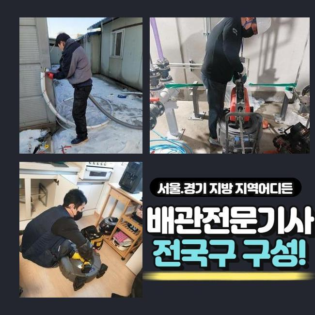
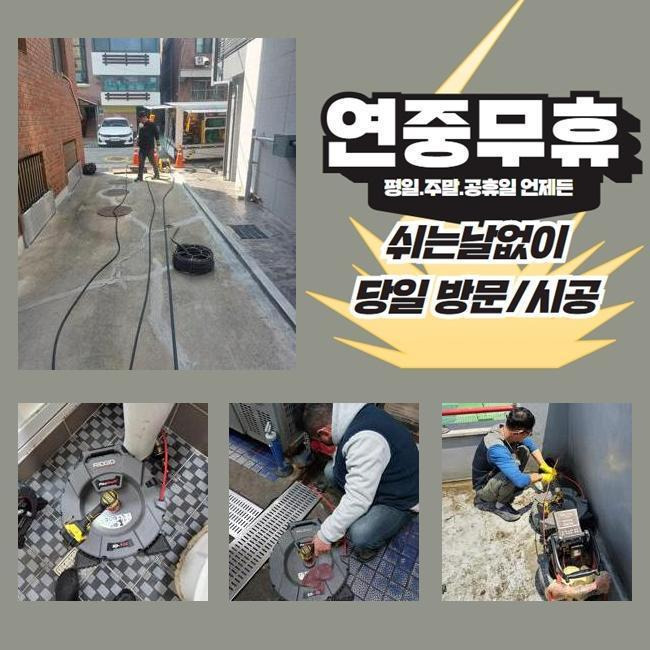
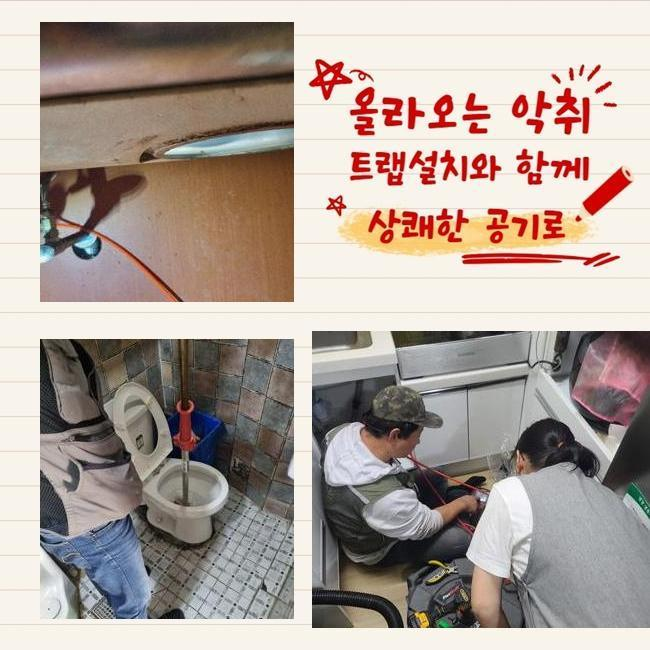
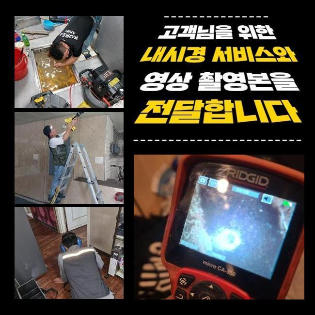
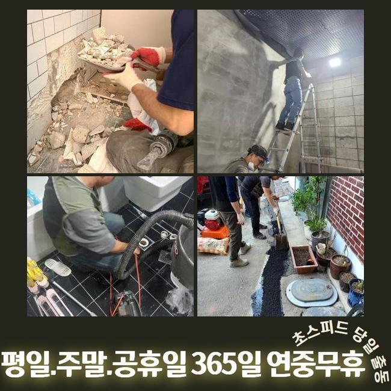
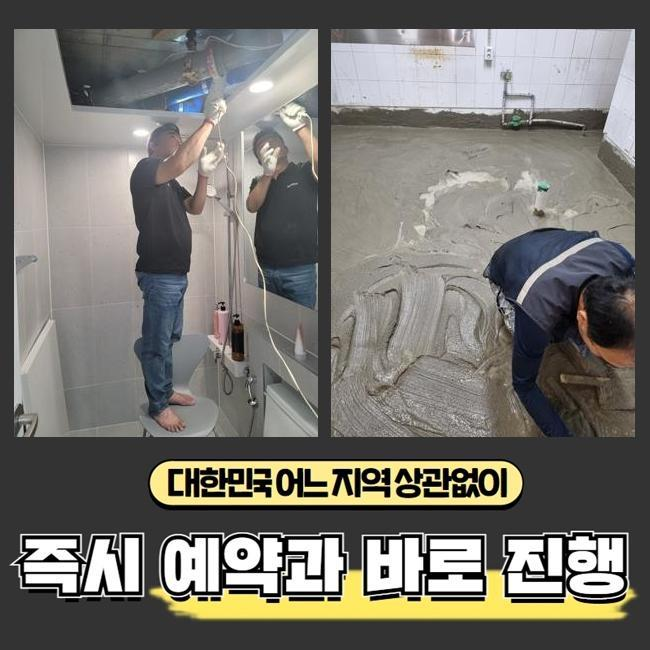

🏠 김포시 장기동씽크대배수관막힘 김포본동 배관내시경카메라 출장설비
용인 싱크대막힘 전문 시공 후기

📋 작업 개요
- 위치: 용인
- 서비스 유형: 싱크대막힘, 하수구막힘, 배관막힘, 누수수리, 역류해결, 뚫는업체, 배관청소, 고압세척
- 작업 일시: 2025. 3. 11. 15:30
- 업체명: 하수구수사대 (010-5615-2118)
🔍 문제 상황
김포시 장기동씽크대배수관막힘 김포본동 배관내시경카메라 출장설비
어떠한 곳이라도 하수구가 막혔다면 신속하게 방문하여 해결해주는 업체인데요
대부분의 경우에는 혼자서 직접 처리하려고 할때 배수구 클리너나 락스같은 것들을 이용하실거에요
클리너같은 것을 사용하면 배관안속에 누적된 오염물을 없애보는데 유용하긴 합니다
용액을 부어봐도 제거해내기가 곤란한 잔해물들이 있죠
대표로 여러가지의 오염물이 덩어리상태로 단단히 굳어버리는 고착물질을 제거하는것은 어렵죠
고착물의 경우엔 내시경장비를 사용하여 이물의 지점과 형태를 정확히 파악하고 알맞은 방법대로 제거해주는 작업이 필요하겠습니다
업체에게 맡겼을때 어떤식으로 단단한 이물질들을 제거해내는지 며칠전 방문한 작업내용으로 알려드리도록 해볼게요
방문한장소는 가정내에서 발생된 막힘문제죠
욕실아래에 배수관이 막히며 의뢰하신 것인데요
저희업체는 의뢰자께서 말씀하신것과 현장상태를 살피면서 원인에대해 알아보았어요
고객님께선 하루전부터 물빠짐이 점진적으로 더뎌지기 시작했으며 냄새까지 발생했다고 하셨습니다

🔎 원인 분석
💡 전문가 진단: 정밀 진단 장비를 사용하여 슬러지의 고착 여부를 판명하고 타격/세척 작업을 실시했습니다.
직접 뚫어보려고 락스와 과탄산소다를 사용해 청소해보신 상황이었죠
이렇게 했는데도 불구하고 악취현상은 제거되지 않았으며 물빠짐도 정상적으로 돌아오지 않으셨는데요
시간이지나며 되레 배수구는 심각하게 막혀버려서 결국엔 저희들에게 요청주신 것이죠
저흰 고객께서 말씀하신것과 하수구를 살피며 원인 찾기에 돌입했어요
냄새가 나는 하수구막힘은 막히게된 원인에 대하여 정확히 찾는게 중요하겠습니다
석션장비로 바닥쪽에 고여있는 물들을 제거한후 장착된트랩을 분리하기 시작했어요
배수구주위를 확인해보았는데 내시경없이는 원인파악이 불가했죠
하수구내부를 확인시켜주는 하수관내부 촬영기계를 투입했어요
카메라장비가 하수구내에 투입되니 군데군데 오염물질이 모니터로 확인됐죠
확인했지만 막힘정도를 유발시킬 정도가 아니어서 더욱더 깊숙하게 주입시켰더니 막힌이유를 알수있었죠
모발이나 다양한 이물이 오랜기간 퇴적되버린 석회물이었죠
하수구내벽에 달라붙은채 덩어리진 이물은 물길자체를 좁게하고 좁은통로로 오염물이 지속적으로 썩으면서 악취문제도 일어난것이죠

🔧 작업 과정
석회물질은 여러의 오염물이 쌓이면서 덩어리상태로 생기게되는데 배관막힘의 근본적인 원인인데요
날이가면서 더욱 단단해질수 있으며 제거하는 방법들도 굳어있는 정도마다 차이가 있을 수 있어요
현장에서 보였던 이물은 덩어리짐과 굳어진 형태가 심각하지 않다보니 석션기만으로 제거해볼수 있었습니다
석션기의 경우 배관내에 쌓여진 오염물을 빨아들이는 기계라고 생각하시면 됩니다
하수구내부가 손상되지않게 세심한 방법으로 청소하고자 카메라장비도 넣어서 작업해 주었죠
하수구안쪽을 들여다보며 오염물이 쌓여있는 곳에 흡입기로 빨아들인후 슬러지들을 제거해냈어요
하수도 깊은곳도 내시경으로 살펴보면서 달라붙어있는 오염물과 물때를 청소해줬죠
이물제거를 세세하게 진행한뒤 내시경을 투입해서 다시한번 배관속을 체크하는걸 반복하면서 착수했어요
반복을하며 진행했더니 배관통로에 남아있던 각종 찌든때와 오염물질들이 깔끔하게 세척된것이 모니터로 확인할수있었죠
이물질들을 제거해보니 악취증세도 사라지는걸 확인했는데요
마무리 과정으로 배수상태를 점검하고자 샤워기를 틀어서 배수가 정상적으로 진행되는지 알아보았죠
다량의 오염물을 제거했기에 문제없이 빠져나가는것을 확인할수 있었는데요
테스트하는 작업을 마친후에 철수했는데요
재차 말씀드리지만 전문업체의 지원이 필요한것은 막힘문제가 일어난 이유에대해 명확히 밝혀내야지만 해결할수 있습니다
굳은형태로 이루어진 오염물은 클리너로 제거해내기가 쉽지않죠
혹여라도 방치한다면 누수문제나 역류현상으로 이어지기도 한답니다
돌처럼 슬러지들이 굳어졌다면 석션기말고 다른기계가 필요하기도 해요
샤프트기로 석회물들을 분쇄할수있어 현장장소마다 활용되는 도구들이 다를수있답니다
배관시스템이 무너졌을때 주변에서 알려준 여러 방법대로 간단히 처리될거라고 생각하십니다


✅ 작업 완료
자가조치를 이용해봐도 물이 빠지는게 확실하게 내려가지않고 심각한 냄새도 하수관에서 동반되고 있다면 전문업체에 맡기는게 좋습니다
화장실이나 싱크대처럼 물사용이 많은곳은 정기적인 점검을통해 막힘증세들을 예방해보는게 중요하답니다
자가적으로 예방할수있는 과정들을 간단히 말씀드려보면 트랩과 배수구망을 깔아서 악취현상과 막힘문제를 예방할수있죠
아파트나 빌라처럼 많은세대가 밀집된 건물이라고 한다면 신속대처가 필요할수 있으니 문의주시면 1시간안으로 내방해드릴게요
작업계획을 투명하게 공개하니 고객님이 편하신때에 문의주신다면 상세하게 응대를 진행해드리도록 하겠습니다!




⚠️ 베란다 누수 및 방수 관리 방법
- ✅ 비가 많이 올 때 창틀 주변이나 아래층 천장에 얼룩이 생기는지 정기적으로 확인해 보세요.
- ✅ 우수관 주변 실리콘 마감이 들뜨거나 깨진 틈새가 있는지 손상 여부를 수시로 체크하세요.
- ✅ 베란다 바닥 타일의 줄눈(메지)이 소실되면 그 틈으로 물이 침투하여 누수가 유발됩니다.
- ✅ 누수 의심 증상 발견 시 방치하면 아래층 손실이 커지므로 즉시 전문가의 진단을 받으십시오.
💡 핵심 정리
- 확실한 장비 작업(내시경 점검 및 샤프트 스케일링)으로 원인을 뿌리 뽑습니다.
- 작업 후 1년 이내에 동일한 부위 재발 시 100% 무상 A/S 서비스를 보장합니다.
- 서울 · 경기 · 인천 전 지역에 24시간 언제든 긴급 출동할 수 있도록 항시 대기 중입니다.
❓ 자주 묻는 질문 (FAQ)
🚨 용인 싱크대막힘 문제로 고민이신가요?
정확한 원인 진단과 확실한 시공으로 재발 없는 해결을 약속드립니다.
24시간 긴급 출동 | 서울 · 경기 · 인천 전지역 | 1년 내 재발 시 무상 A/S